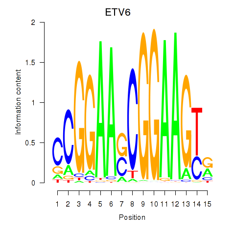

Motif ID: ETV6
Z-value: 0.798
Transcription factors associated with ETV6:
| Gene Symbol | Entrez ID | Gene Name |
|---|---|---|
| ETV6 | ENSG00000139083.6 | ETV6 |
![](http://string-db.org/api/image/network?network_flavor=evidence&limit=0&species=9606&caller_identity=MARA&identifiers=9606.ENSP00000299454%0D9606.ENSP00000220003%0D9606.ENSP00000447000%0D9606.ENSP00000470652%0D9606.ENSP00000420959%0D9606.ENSP00000238146%0D9606.ENSP00000275517%0D9606.ENSP00000312411%0D9606.ENSP00000269025%0D9606.ENSP00000374332%0D9606.ENSP00000362621%0D9606.ENSP00000360167%0D9606.ENSP00000335106%0D9606.ENSP00000216297%0D9606.ENSP00000271628%0D9606.ENSP00000287038%0D9606.ENSP00000348799%0D9606.ENSP00000323046%0D9606.ENSP00000334128%0D9606.ENSP00000277746%0D9606.ENSP00000354414%0D9606.ENSP00000356105%0D9606.ENSP00000442304%0D9606.ENSP00000326579%0D9606.ENSP00000320318%0D9606.ENSP00000255764%0D9606.ENSP00000361892%0D9606.ENSP00000348395%0D9606.ENSP00000290541%0D9606.ENSP00000225504%0D9606.ENSP00000358022%0D9606.ENSP00000345719%0D9606.ENSP00000262432%0D9606.ENSP00000285599%0D9606.ENSP00000309610%0D9606.ENSP00000365844%0D9606.ENSP00000424048%0D9606.ENSP00000247977%0D9606.ENSP00000415070%0D9606.ENSP00000252482%0D9606.ENSP00000368389%0D9606.ENSP00000321845%0D9606.ENSP00000347206%0D9606.ENSP00000325285%0D9606.ENSP00000199706%0D9606.ENSP00000331504%0D9606.ENSP00000267103%0D9606.ENSP00000384004%0D9606.ENSP00000376946%0D9606.ENSP00000330426%0D9606.ENSP00000220429%0D9606.ENSP00000299424%0D9606.ENSP00000362618%0D9606.ENSP00000338057%0D9606.ENSP00000302310%0D9606.ENSP00000266604%0D9606.ENSP00000368686%0D9606.ENSP00000316109%0D9606.ENSP00000285814%0D9606.ENSP00000324804%0D9606.ENSP00000309163%0D9606.ENSP00000345530%0D9606.ENSP00000290208%0D9606.ENSP00000357914%0D9606.ENSP00000411459%0D9606.ENSP00000310303%0D9606.ENSP00000364898%0D9606.ENSP00000369456%0D9606.ENSP00000437409%0D9606.ENSP00000294258%0D9606.ENSP00000359688%0D9606.ENSP00000387100%0D9606.ENSP00000261708%0D9606.ENSP00000265260%0D9606.ENSP00000248248%0D9606.ENSP00000315476%0D9606.ENSP00000362354%0D9606.ENSP00000363189%0D9606.ENSP00000367220%0D9606.ENSP00000316042%0D9606.ENSP00000365962%0D9606.ENSP00000394954%0D9606.ENSP00000366899%0D9606.ENSP00000254940%0D9606.ENSP00000386212%0D9606.ENSP00000222969%0D9606.ENSP00000360060%0D9606.ENSP00000252445%0D9606.ENSP00000364260%0D9606.ENSP00000241416%0D9606.ENSP00000320184%0D9606.ENSP00000319305%0D9606.ENSP00000312395%0D9606.ENSP00000353331%0D9606.ENSP00000040584%0D9606.ENSP00000259206%0D9606.ENSP00000342322%0D9606.ENSP00000296003%0D9606.ENSP00000357739%0D9606.ENSP00000387046%0D9606.ENSP00000278949)
{kind=link}
{kind=link}
{kind=link}
{kind=link}
{kind=link}
Top targets:
Gene overrepresentation in biological_process category:
| Log-likelihood per target | Total log-likelihood | Term | Description |
|---|---|---|---|
| 0.1 | 0.4 | GO:1903251 | multi-ciliated epithelial cell differentiation(GO:1903251) |
| 0.1 | 0.6 | GO:0071051 | polyadenylation-dependent snoRNA 3'-end processing(GO:0071051) |
| 0.1 | 0.3 | GO:0046041 | ITP metabolic process(GO:0046041) |
| 0.1 | 0.3 | GO:0019085 | early viral transcription(GO:0019085) |
| 0.1 | 0.2 | GO:0080120 | CAAX-box protein processing(GO:0071586) CAAX-box protein maturation(GO:0080120) |
| 0.1 | 0.4 | GO:0016344 | meiotic chromosome movement towards spindle pole(GO:0016344) |
| 0.0 | 0.2 | GO:0090071 | negative regulation of ribosome biogenesis(GO:0090071) |
| 0.0 | 0.1 | GO:0071921 | establishment of sister chromatid cohesion(GO:0034085) cohesin loading(GO:0071921) regulation of cohesin loading(GO:0071922) |
| 0.0 | 0.3 | GO:0044771 | meiotic cell cycle phase transition(GO:0044771) regulation of meiotic cell cycle phase transition(GO:1901993) |
| 0.0 | 0.5 | GO:0045901 | positive regulation of translational elongation(GO:0045901) |
| 0.0 | 0.3 | GO:2000825 | positive regulation of androgen receptor activity(GO:2000825) |
| 0.0 | 0.3 | GO:0018032 | protein amidation(GO:0018032) |
| 0.0 | 0.3 | GO:1903378 | positive regulation of oxidative stress-induced neuron intrinsic apoptotic signaling pathway(GO:1903378) |
| 0.0 | 0.2 | GO:0071460 | cellular response to cell-matrix adhesion(GO:0071460) |
| 0.0 | 0.2 | GO:0042223 | response to molecule of fungal origin(GO:0002238) positive regulation of interleukin-3 production(GO:0032752) interleukin-3 biosynthetic process(GO:0042223) regulation of interleukin-3 biosynthetic process(GO:0045399) positive regulation of interleukin-3 biosynthetic process(GO:0045401) cellular response to molecule of fungal origin(GO:0071226) |
| 0.0 | 0.2 | GO:0051754 | meiotic sister chromatid cohesion, centromeric(GO:0051754) |
| 0.0 | 0.3 | GO:2000660 | negative regulation of interleukin-1-mediated signaling pathway(GO:2000660) |
| 0.0 | 0.1 | GO:2000157 | regulation of protein K48-linked deubiquitination(GO:1903093) negative regulation of protein K48-linked deubiquitination(GO:1903094) negative regulation of ubiquitin-specific protease activity(GO:2000157) |
| 0.0 | 0.1 | GO:0015920 | lipopolysaccharide transport(GO:0015920) |
| 0.0 | 0.2 | GO:0010961 | cellular magnesium ion homeostasis(GO:0010961) |
| 0.0 | 0.1 | GO:0006408 | snRNA export from nucleus(GO:0006408) positive regulation of RNA export from nucleus(GO:0046833) |
| 0.0 | 0.2 | GO:1903423 | positive regulation of synaptic vesicle endocytosis(GO:1900244) positive regulation of synaptic vesicle recycling(GO:1903423) |
| 0.0 | 0.1 | GO:0044778 | meiotic DNA integrity checkpoint(GO:0044778) |
| 0.0 | 0.3 | GO:0051013 | microtubule severing(GO:0051013) |
| 0.0 | 0.4 | GO:0016255 | attachment of GPI anchor to protein(GO:0016255) |
| 0.0 | 0.2 | GO:0060011 | sperm ejaculation(GO:0042713) Sertoli cell proliferation(GO:0060011) |
| 0.0 | 0.1 | GO:0034499 | late endosome to Golgi transport(GO:0034499) |
| 0.0 | 0.1 | GO:1903722 | regulation of centriole elongation(GO:1903722) |
| 0.0 | 0.1 | GO:0034402 | recruitment of 3'-end processing factors to RNA polymerase II holoenzyme complex(GO:0034402) |
| 0.0 | 0.6 | GO:0051601 | exocyst localization(GO:0051601) |
| 0.0 | 0.1 | GO:0072334 | UDP-galactose transport(GO:0015785) UDP-galactose transmembrane transport(GO:0072334) |
| 0.0 | 0.1 | GO:0000349 | generation of catalytic spliceosome for first transesterification step(GO:0000349) |
| 0.0 | 0.1 | GO:1990737 | response to manganese-induced endoplasmic reticulum stress(GO:1990737) |
| 0.0 | 0.3 | GO:0002457 | T cell antigen processing and presentation(GO:0002457) |
| 0.0 | 0.2 | GO:0060800 | regulation of cell differentiation involved in embryonic placenta development(GO:0060800) |
| 0.0 | 0.1 | GO:1990258 | box C/D snoRNA 3'-end processing(GO:0000494) box C/D snoRNA metabolic process(GO:0033967) box C/D snoRNA processing(GO:0034963) histone glutamine methylation(GO:1990258) |
| 0.0 | 0.1 | GO:0045360 | regulation of interleukin-1 biosynthetic process(GO:0045360) positive regulation of interleukin-1 biosynthetic process(GO:0045362) interleukin-1 beta biosynthetic process(GO:0050720) |
| 0.0 | 0.1 | GO:0042998 | positive regulation of Golgi to plasma membrane protein transport(GO:0042998) |
| 0.0 | 0.2 | GO:0019348 | dolichol metabolic process(GO:0019348) |
| 0.0 | 0.1 | GO:0003331 | regulation of extracellular matrix constituent secretion(GO:0003330) positive regulation of extracellular matrix constituent secretion(GO:0003331) |
| 0.0 | 0.1 | GO:0044208 | 'de novo' AMP biosynthetic process(GO:0044208) |
| 0.0 | 0.1 | GO:0043137 | DNA replication, removal of RNA primer(GO:0043137) |
| 0.0 | 0.2 | GO:0017196 | N-terminal peptidyl-methionine acetylation(GO:0017196) |
| 0.0 | 0.2 | GO:0075525 | viral translational termination-reinitiation(GO:0075525) |
| 0.0 | 0.1 | GO:0010847 | regulation of chromatin assembly(GO:0010847) |
| 0.0 | 0.1 | GO:0032618 | interleukin-15 production(GO:0032618) |
| 0.0 | 0.5 | GO:0070935 | 3'-UTR-mediated mRNA stabilization(GO:0070935) |
| 0.0 | 0.1 | GO:0021718 | superior olivary nucleus development(GO:0021718) superior olivary nucleus maturation(GO:0021722) |
| 0.0 | 0.5 | GO:0043374 | CD8-positive, alpha-beta T cell differentiation(GO:0043374) |
| 0.0 | 0.1 | GO:2001034 | positive regulation of double-strand break repair via nonhomologous end joining(GO:2001034) |
| 0.0 | 0.1 | GO:0036228 | protein targeting to nuclear inner membrane(GO:0036228) |
| 0.0 | 0.1 | GO:0032053 | ciliary basal body organization(GO:0032053) |
| 0.0 | 0.1 | GO:0051970 | negative regulation of transmission of nerve impulse(GO:0051970) |
| 0.0 | 0.1 | GO:0006425 | glutaminyl-tRNA aminoacylation(GO:0006425) |
| 0.0 | 0.1 | GO:0042247 | morphogenesis of follicular epithelium(GO:0016333) establishment or maintenance of polarity of follicular epithelium(GO:0016334) establishment of planar polarity of follicular epithelium(GO:0042247) |
| 0.0 | 0.1 | GO:0042264 | peptidyl-aspartic acid hydroxylation(GO:0042264) |
| 0.0 | 0.4 | GO:0035970 | peptidyl-threonine dephosphorylation(GO:0035970) |
| 0.0 | 0.1 | GO:0036451 | cap mRNA methylation(GO:0036451) |
| 0.0 | 0.2 | GO:0006013 | mannose metabolic process(GO:0006013) |
| 0.0 | 0.3 | GO:0000479 | endonucleolytic cleavage of tricistronic rRNA transcript (SSU-rRNA, 5.8S rRNA, LSU-rRNA)(GO:0000479) |
| 0.0 | 0.3 | GO:0002862 | negative regulation of inflammatory response to antigenic stimulus(GO:0002862) |
| 0.0 | 0.1 | GO:0061484 | hematopoietic stem cell homeostasis(GO:0061484) |
| 0.0 | 0.1 | GO:0070475 | rRNA base methylation(GO:0070475) |
| 0.0 | 0.4 | GO:2000251 | positive regulation of actin cytoskeleton reorganization(GO:2000251) |
| 0.0 | 0.1 | GO:0044501 | modulation of signal transduction in other organism(GO:0044501) modulation by symbiont of host signal transduction pathway(GO:0052027) modulation of signal transduction in other organism involved in symbiotic interaction(GO:0052250) modulation by symbiont of host I-kappaB kinase/NF-kappaB cascade(GO:0085032) |
| 0.0 | 0.3 | GO:0048096 | chromatin-mediated maintenance of transcription(GO:0048096) |
| 0.0 | 0.1 | GO:0035965 | cardiolipin acyl-chain remodeling(GO:0035965) |
| 0.0 | 0.3 | GO:2000059 | negative regulation of protein ubiquitination involved in ubiquitin-dependent protein catabolic process(GO:2000059) |
| 0.0 | 0.0 | GO:0044313 | protein K6-linked deubiquitination(GO:0044313) |
| 0.0 | 0.1 | GO:0006391 | transcription initiation from mitochondrial promoter(GO:0006391) |
| 0.0 | 0.1 | GO:0006269 | DNA replication, synthesis of RNA primer(GO:0006269) |
| 0.0 | 0.1 | GO:0080009 | adenosine to inosine editing(GO:0006382) mRNA methylation(GO:0080009) |
| 0.0 | 0.1 | GO:0070417 | positive regulation of translation in response to endoplasmic reticulum stress(GO:0036493) cellular response to cold(GO:0070417) |
| 0.0 | 0.3 | GO:0035641 | locomotory exploration behavior(GO:0035641) |
| 0.0 | 0.4 | GO:0006646 | phosphatidylethanolamine biosynthetic process(GO:0006646) |
| 0.0 | 0.2 | GO:0006689 | ganglioside catabolic process(GO:0006689) |
| 0.0 | 0.1 | GO:0035879 | plasma membrane lactate transport(GO:0035879) |
| 0.0 | 0.1 | GO:0010637 | negative regulation of mitochondrial fusion(GO:0010637) |
| 0.0 | 0.1 | GO:0035720 | intraciliary anterograde transport(GO:0035720) |
| 0.0 | 0.1 | GO:0006436 | tryptophanyl-tRNA aminoacylation(GO:0006436) |
| 0.0 | 0.2 | GO:0032968 | positive regulation of transcription elongation from RNA polymerase II promoter(GO:0032968) |
| 0.0 | 0.1 | GO:0007089 | traversing start control point of mitotic cell cycle(GO:0007089) |
| 0.0 | 0.0 | GO:0002224 | toll-like receptor signaling pathway(GO:0002224) |
| 0.0 | 0.1 | GO:0010989 | negative regulation of low-density lipoprotein particle clearance(GO:0010989) |
| 0.0 | 0.1 | GO:0006420 | arginyl-tRNA aminoacylation(GO:0006420) |
| 0.0 | 0.2 | GO:0014877 | response to muscle inactivity involved in regulation of muscle adaptation(GO:0014877) response to denervation involved in regulation of muscle adaptation(GO:0014894) |
| 0.0 | 1.2 | GO:0070125 | mitochondrial translational elongation(GO:0070125) |
| 0.0 | 0.1 | GO:0019427 | acetate biosynthetic process(GO:0019413) acetyl-CoA biosynthetic process from acetate(GO:0019427) propionate metabolic process(GO:0019541) propionate biosynthetic process(GO:0019542) |
Gene overrepresentation in cellular_component category:
| Log-likelihood per target | Total log-likelihood | Term | Description |
|---|---|---|---|
| 0.1 | 0.4 | GO:0042765 | GPI-anchor transamidase complex(GO:0042765) |
| 0.0 | 0.1 | GO:0035101 | FACT complex(GO:0035101) |
| 0.0 | 0.8 | GO:0019774 | proteasome core complex, beta-subunit complex(GO:0019774) |
| 0.0 | 0.1 | GO:0000939 | condensed chromosome inner kinetochore(GO:0000939) |
| 0.0 | 0.2 | GO:0033185 | dolichol-phosphate-mannose synthase complex(GO:0033185) |
| 0.0 | 0.2 | GO:0034673 | inhibin-betaglycan-ActRII complex(GO:0034673) |
| 0.0 | 0.3 | GO:0070847 | core mediator complex(GO:0070847) |
| 0.0 | 0.6 | GO:0000176 | nuclear exosome (RNase complex)(GO:0000176) |
| 0.0 | 0.2 | GO:0071006 | U2-type catalytic step 1 spliceosome(GO:0071006) |
| 0.0 | 0.1 | GO:0097451 | multi-eIF complex(GO:0043614) translation preinitiation complex(GO:0070993) glial limiting end-foot(GO:0097451) |
| 0.0 | 0.2 | GO:0005846 | nuclear cap binding complex(GO:0005846) |
| 0.0 | 0.2 | GO:0042406 | extrinsic component of endoplasmic reticulum membrane(GO:0042406) |
| 0.0 | 0.2 | GO:0032044 | DSIF complex(GO:0032044) |
| 0.0 | 0.4 | GO:0030478 | actin cap(GO:0030478) |
| 0.0 | 0.2 | GO:0019815 | B cell receptor complex(GO:0019815) |
| 0.0 | 0.1 | GO:0044611 | nuclear pore inner ring(GO:0044611) |
| 0.0 | 0.3 | GO:0097136 | Bcl-2 family protein complex(GO:0097136) |
| 0.0 | 0.2 | GO:0005683 | U7 snRNP(GO:0005683) |
| 0.0 | 0.2 | GO:0000125 | PCAF complex(GO:0000125) |
| 0.0 | 0.1 | GO:0016533 | cyclin-dependent protein kinase 5 holoenzyme complex(GO:0016533) |
| 0.0 | 0.1 | GO:0042643 | actomyosin, actin portion(GO:0042643) |
| 0.0 | 0.1 | GO:0030896 | checkpoint clamp complex(GO:0030896) |
| 0.0 | 0.6 | GO:0000145 | exocyst(GO:0000145) |
| 0.0 | 0.1 | GO:0005638 | lamin filament(GO:0005638) |
| 0.0 | 0.5 | GO:0030687 | preribosome, large subunit precursor(GO:0030687) |
| 0.0 | 0.1 | GO:0097362 | MCM8-MCM9 complex(GO:0097362) |
| 0.0 | 0.1 | GO:0031428 | box C/D snoRNP complex(GO:0031428) |
| 0.0 | 0.2 | GO:0001940 | male pronucleus(GO:0001940) |
| 0.0 | 0.1 | GO:0000275 | mitochondrial proton-transporting ATP synthase complex, catalytic core F(1)(GO:0000275) |
| 0.0 | 0.1 | GO:0043541 | UDP-N-acetylglucosamine transferase complex(GO:0043541) |
| 0.0 | 0.3 | GO:0005689 | U12-type spliceosomal complex(GO:0005689) |
| 0.0 | 0.1 | GO:0036396 | MIS complex(GO:0036396) mRNA editing complex(GO:0045293) |
| 0.0 | 0.1 | GO:0034388 | Pwp2p-containing subcomplex of 90S preribosome(GO:0034388) |
| 0.0 | 0.1 | GO:0031205 | endoplasmic reticulum Sec complex(GO:0031205) |
| 0.0 | 0.2 | GO:0036157 | outer dynein arm(GO:0036157) |
| 0.0 | 0.1 | GO:0033565 | ESCRT-0 complex(GO:0033565) |
| 0.0 | 0.1 | GO:0005658 | alpha DNA polymerase:primase complex(GO:0005658) |
| 0.0 | 0.0 | GO:0031251 | PAN complex(GO:0031251) |
| 0.0 | 0.1 | GO:0036056 | filtration diaphragm(GO:0036056) slit diaphragm(GO:0036057) |
| 0.0 | 0.1 | GO:0034753 | nuclear aryl hydrocarbon receptor complex(GO:0034753) |
| 0.0 | 0.2 | GO:0008250 | oligosaccharyltransferase complex(GO:0008250) |
| 0.0 | 0.0 | GO:0045283 | mitochondrial respiratory chain complex II, succinate dehydrogenase complex (ubiquinone)(GO:0005749) succinate dehydrogenase complex (ubiquinone)(GO:0045257) respiratory chain complex II(GO:0045273) succinate dehydrogenase complex(GO:0045281) fumarate reductase complex(GO:0045283) |
| 0.0 | 0.8 | GO:0000315 | organellar large ribosomal subunit(GO:0000315) mitochondrial large ribosomal subunit(GO:0005762) |
Gene overrepresentation in molecular_function category:
| Log-likelihood per target | Total log-likelihood | Term | Description |
|---|---|---|---|
| 0.1 | 0.3 | GO:0005150 | interleukin-1, Type I receptor binding(GO:0005150) |
| 0.1 | 0.4 | GO:0003923 | GPI-anchor transamidase activity(GO:0003923) |
| 0.1 | 0.5 | GO:0035368 | selenocysteine insertion sequence binding(GO:0035368) |
| 0.1 | 0.4 | GO:0008195 | phosphatidate phosphatase activity(GO:0008195) |
| 0.1 | 0.3 | GO:0035529 | NADH pyrophosphatase activity(GO:0035529) |
| 0.1 | 0.2 | GO:0042134 | rRNA primary transcript binding(GO:0042134) |
| 0.0 | 0.3 | GO:0004504 | peptidylglycine monooxygenase activity(GO:0004504) peptidylamidoglycolate lyase activity(GO:0004598) |
| 0.0 | 0.2 | GO:0004582 | dolichyl-phosphate beta-D-mannosyltransferase activity(GO:0004582) |
| 0.0 | 0.3 | GO:0016427 | tRNA (cytosine) methyltransferase activity(GO:0016427) |
| 0.0 | 0.1 | GO:0070506 | high-density lipoprotein particle receptor activity(GO:0070506) |
| 0.0 | 0.2 | GO:0005503 | all-trans retinal binding(GO:0005503) |
| 0.0 | 0.1 | GO:0016842 | amidine-lyase activity(GO:0016842) |
| 0.0 | 0.1 | GO:0016429 | tRNA (adenine) methyltransferase activity(GO:0016426) tRNA (adenine-N1-)-methyltransferase activity(GO:0016429) |
| 0.0 | 0.1 | GO:0005459 | UDP-galactose transmembrane transporter activity(GO:0005459) |
| 0.0 | 0.3 | GO:0008568 | microtubule-severing ATPase activity(GO:0008568) |
| 0.0 | 0.5 | GO:0052629 | phosphatidylinositol-3,5-bisphosphate 3-phosphatase activity(GO:0052629) |
| 0.0 | 0.1 | GO:0047184 | 1-acylglycerophosphocholine O-acyltransferase activity(GO:0047184) |
| 0.0 | 0.2 | GO:0034511 | U3 snoRNA binding(GO:0034511) |
| 0.0 | 0.2 | GO:0034711 | inhibin binding(GO:0034711) BMP receptor activity(GO:0098821) |
| 0.0 | 0.1 | GO:1990259 | protein-glutamine N-methyltransferase activity(GO:0036009) histone-glutamine methyltransferase activity(GO:1990259) |
| 0.0 | 0.1 | GO:0052856 | NADHX epimerase activity(GO:0052856) NADPHX epimerase activity(GO:0052857) |
| 0.0 | 0.8 | GO:0004298 | threonine-type endopeptidase activity(GO:0004298) threonine-type peptidase activity(GO:0070003) |
| 0.0 | 0.1 | GO:0036435 | K48-linked polyubiquitin binding(GO:0036435) |
| 0.0 | 0.3 | GO:0051434 | BH3 domain binding(GO:0051434) |
| 0.0 | 0.1 | GO:0016534 | cyclin-dependent protein kinase 5 activator activity(GO:0016534) |
| 0.0 | 0.1 | GO:0003896 | DNA primase activity(GO:0003896) |
| 0.0 | 0.1 | GO:0004819 | glutamine-tRNA ligase activity(GO:0004819) |
| 0.0 | 0.2 | GO:0052795 | exo-alpha-(2->3)-sialidase activity(GO:0052794) exo-alpha-(2->6)-sialidase activity(GO:0052795) exo-alpha-(2->8)-sialidase activity(GO:0052796) |
| 0.0 | 0.1 | GO:0016422 | mRNA (2'-O-methyladenosine-N6-)-methyltransferase activity(GO:0016422) |
| 0.0 | 0.1 | GO:0004483 | mRNA (nucleoside-2'-O-)-methyltransferase activity(GO:0004483) |
| 0.0 | 0.1 | GO:0004492 | methylmalonyl-CoA decarboxylase activity(GO:0004492) |
| 0.0 | 0.0 | GO:0016964 | alpha-2 macroglobulin receptor activity(GO:0016964) |
| 0.0 | 0.2 | GO:0016846 | carbon-sulfur lyase activity(GO:0016846) |
| 0.0 | 0.1 | GO:0044729 | hemi-methylated DNA-binding(GO:0044729) |
| 0.0 | 0.1 | GO:0008309 | double-stranded DNA exodeoxyribonuclease activity(GO:0008309) linoleoyl-CoA desaturase activity(GO:0016213) 5'-flap endonuclease activity(GO:0017108) |
| 0.0 | 0.2 | GO:1990446 | U1 snRNP binding(GO:1990446) |
| 0.0 | 0.1 | GO:0000340 | RNA 7-methylguanosine cap binding(GO:0000340) |
| 0.0 | 0.0 | GO:0051538 | succinate dehydrogenase (ubiquinone) activity(GO:0008177) 3 iron, 4 sulfur cluster binding(GO:0051538) |
| 0.0 | 0.1 | GO:0015018 | galactosylgalactosylxylosylprotein 3-beta-glucuronosyltransferase activity(GO:0015018) |
| 0.0 | 0.0 | GO:0001003 | polymerase III regulatory region sequence-specific DNA binding(GO:0000992) RNA polymerase III type 1 promoter sequence-specific DNA binding(GO:0001002) RNA polymerase III type 2 promoter sequence-specific DNA binding(GO:0001003) |
| 0.0 | 0.1 | GO:0016979 | lipoate-protein ligase activity(GO:0016979) |
| 0.0 | 0.6 | GO:0017091 | AU-rich element binding(GO:0017091) |
| 0.0 | 0.3 | GO:0015095 | magnesium ion transmembrane transporter activity(GO:0015095) |
| 0.0 | 0.2 | GO:0004596 | peptide alpha-N-acetyltransferase activity(GO:0004596) |
| 0.0 | 0.1 | GO:0035614 | snRNA stem-loop binding(GO:0035614) |
| 0.0 | 0.1 | GO:0004830 | tryptophan-tRNA ligase activity(GO:0004830) |
| 0.0 | 0.1 | GO:0071253 | connexin binding(GO:0071253) |
| 0.0 | 0.1 | GO:0004814 | arginine-tRNA ligase activity(GO:0004814) |
| 0.0 | 0.1 | GO:0004332 | fructose-bisphosphate aldolase activity(GO:0004332) |
| 0.0 | 0.1 | GO:0008172 | S-methyltransferase activity(GO:0008172) |
| 0.0 | 0.2 | GO:0030280 | structural constituent of epidermis(GO:0030280) |
Gene overrepresentation in C2:CP category:
| Log-likelihood per target | Total log-likelihood | Term | Description |
|---|---|---|---|
| 0.0 | 0.4 | SA_REG_CASCADE_OF_CYCLIN_EXPR | Expression of cyclins regulates progression through the cell cycle by activating cyclin-dependent kinases. |
Gene overrepresentation in C2:CP:REACTOME category:
| Log-likelihood per target | Total log-likelihood | Term | Description |
|---|---|---|---|
| 0.0 | 0.6 | REACTOME_MRNA_DECAY_BY_3_TO_5_EXORIBONUCLEASE | Genes involved in mRNA Decay by 3' to 5' Exoribonuclease |
| 0.0 | 0.3 | REACTOME_SLBP_DEPENDENT_PROCESSING_OF_REPLICATION_DEPENDENT_HISTONE_PRE_MRNAS | Genes involved in SLBP Dependent Processing of Replication-Dependent Histone Pre-mRNAs |
| 0.0 | 0.4 | REACTOME_SYNTHESIS_OF_PE | Genes involved in Synthesis of PE |
| 0.0 | 0.2 | REACTOME_INHIBITION_OF_REPLICATION_INITIATION_OF_DAMAGED_DNA_BY_RB1_E2F1 | Genes involved in Inhibition of replication initiation of damaged DNA by RB1/E2F1 |
| 0.0 | 0.2 | REACTOME_CDC6_ASSOCIATION_WITH_THE_ORC_ORIGIN_COMPLEX | Genes involved in CDC6 association with the ORC:origin complex |
| 0.0 | 0.5 | REACTOME_CRMPS_IN_SEMA3A_SIGNALING | Genes involved in CRMPs in Sema3A signaling |
| 0.0 | 0.6 | REACTOME_POST_TRANSLATIONAL_MODIFICATION_SYNTHESIS_OF_GPI_ANCHORED_PROTEINS | Genes involved in Post-translational modification: synthesis of GPI-anchored proteins |
| 0.0 | 0.7 | REACTOME_G1_PHASE | Genes involved in G1 Phase |